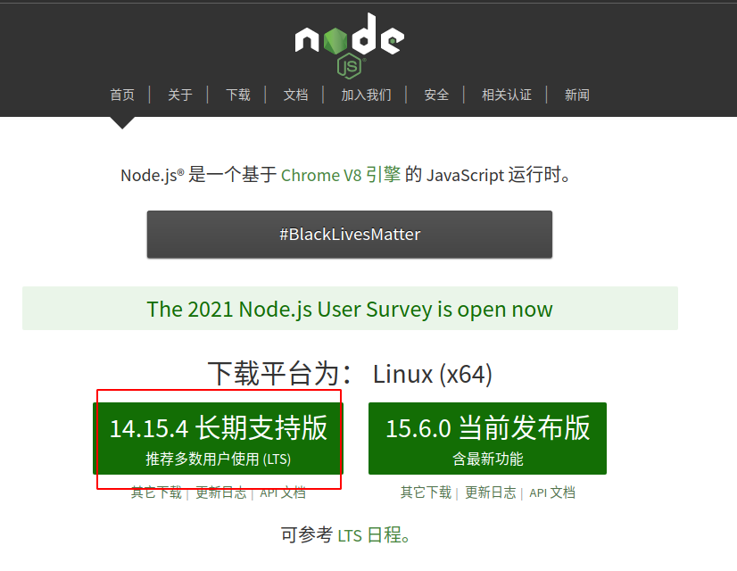
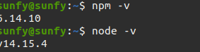
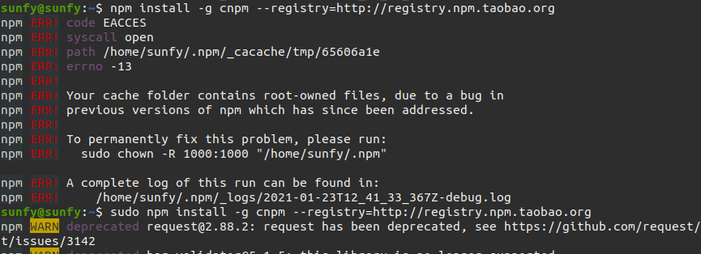
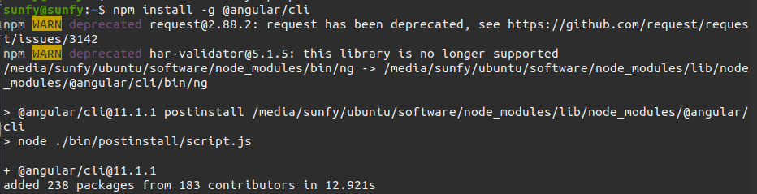

前端基本开发环境安装，node、npm、cnpm、@angular
安装nodejs
第一步，去 nodejs 官网 https://nodejs.org 看最新的版本号；
求稳的话建议选 LTS版。
第二步，添加源后安装
重点来了，nodejs 的每个大版本号都有相对应的源，比如这里的 14.x.x版本的源是https://deb.nodesource.com/setup_14.x。
所以在终端执行：
1 | curl -sL https://deb.nodesource.com/setup_14.x | sudo -E bash - |
稍等片刻，源已经添加完毕，再执行：
1 | sudo apt-get install -y nodejs |
等待安装完成。
安装npm
1 | sudo apt install npm |

淘宝npm镜像 cnpm
国内直接使用 npm 的官方镜像是非常慢的，这里推荐使用淘宝 NPM 镜像。
淘宝 NPM 镜像是一个完整 npmjs.org 镜像，可以用此代替官方版本(只读)，同步频率目前为 10分钟 一次以保证尽量与官方服务同步。
用npm 安装 cnm
1 | npm install -g cnpm --registry=https://registry.npm.taobao.org |
错误

错误原因
找到报错的文件，会看到它的所有者是 root。
之前用 root 进行了局部的安装操作，导致这个文件的所有者是 root ，还包括 .npm 文件夹下部分文件夹的所有权，也是 root，普通用户当然就无权访问了。就会报权限错误。
解决办法
就是把用户目录下的 .npm 文件夹所有权都改成当前用户即可。
比如：当前用户名为 sunfy
1 | sudo chown -R sunfy ~/.npm |
安装Angular
1 | npm install -g @angular/cli |

npm安装后提示命令不存在
解决方案：用一个通用的命令配置环境变量
1 | echo -e "export PATH=$(npm prefix -g)/bin:$PATH" >> ~/.bashrc && source ~/.bashrc |

...
...
00:00
00:00
Copyright 2021 sunfy.top ALL Rights Reserved